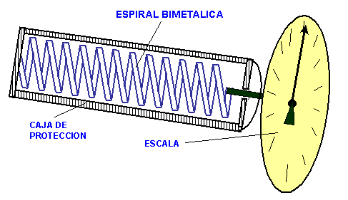

|
TERMOMETRO DE VIDRIO:
La escala puede estar graduada sobre el tubo o ser un elemento a parte. El error presente en este tipo de termómetro es conocido como depresión del punto cero y se debe a que cuando el termómetro se enfría bruscamente, el mercurio recobra sus condiciones originales casi inmediatamente no así el vidrio que tarda días y hasta semanas en volver a su volumen inicial dependiendo de su calidad. Esto hace que el nivel de mercurio se ubique por debajo de la marcación cero y puede corregirse moviendo la escala o llenando de líquido termométrico si el termómetro lo permite. TERMOMETROS BIMETALICOS:  Se utiliza para medir temperaturas donde no es necesario una respuesta inmediata. Los sólidos se dilatan con el calor en forma distinta según su composición metalúrgica. Si unimos dos tiras de igual dimensión pero de materiales diferentes, mediante soldadura o remaches y las sometemos a calentamiento veremos que se produce un encorvamiento quedando en el interior la tira con menor coeficiente de temperatura. Los termómetros de tira bimetálica están formados por varias espiras helicoidales. Al un extremo. Estos últimos son utilizados como patrones de calibración en laboratorios. Los materiales más utilizados son: Latón, monel y acero con alto coeficiente de dilatación. Ferre-niquel o invar (niquel - acero ) con bajo coeficiente de dilatación. Las fundas de protección están hechas de material cerámico y metálicas, encontrándose a menudo fundas cerámicas recubiertas con metal. |
|||
|